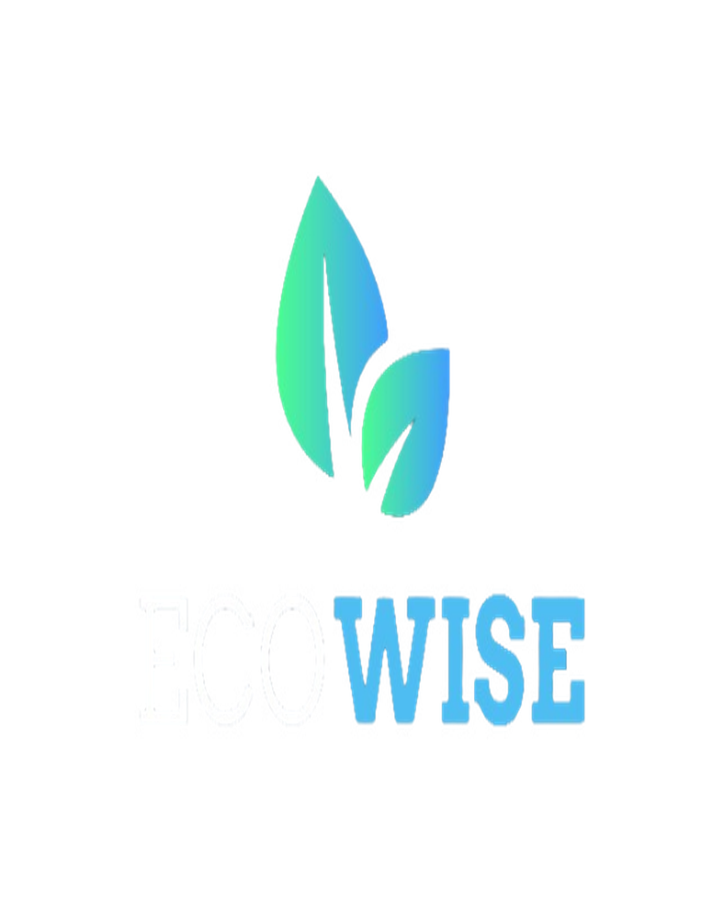
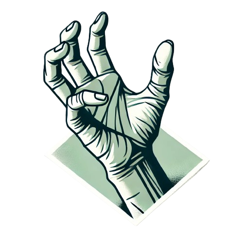

Minhas Habilidades
Tecnologias que domino
HTML5
Estruturação semântica de páginas web
CSS3
Estilização avançada e layouts responsivos
JavaScript
Interatividade e lógica de aplicações
Python
Desenvolvimento back-end e automação
Git e GitHub
Controle de versão e colaboração
Banco de Dados
Modelagem e consultas SQL
Minhas Especialidades
Desenvolvimento Fullstack
Desenvolvimento Fullstack em projetos acadêmicos simples Desktop e mobile.
Suporte
Experiencia com suporte ao cliente e suporte de sistemas adiquiridas atraves de estudo e estagio.
Banco de Dados
Experiência em projetos pessoais e profissionais com MySQL e PostgreSQL. Atualmente utilizo mais o MySQL em projetos pessoais e no meio acadêmico.
Meus Projetos
Alguns dos meus trabalhos recentes

